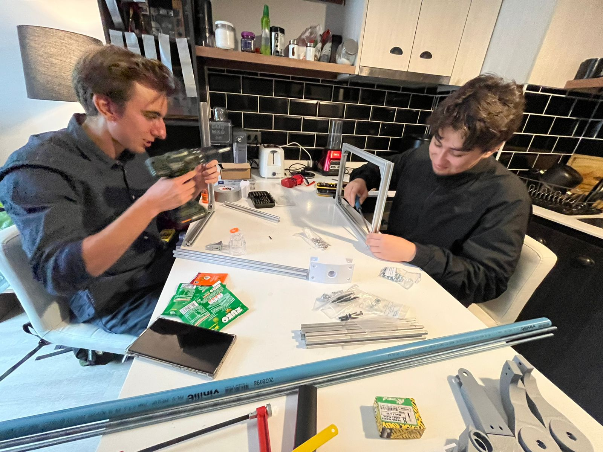

Robótica y Mecánica Espacial
Creamos prototipos funcionales que replican tecnologías usadas en exploración, y los probamos frente a condiciones hostiles: calor, autonomía prolongada y terreno irregular.
- Líder
- César Olivares
- Integrantes
- 2
- Emblema
- Rover Perseverance
Ruta 2026–2027
- Optimizar la navegación autónoma
- Integrar baterías con BMS
- Cámara con espectrógrafo
- Sistema LiDAR